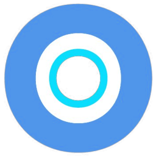
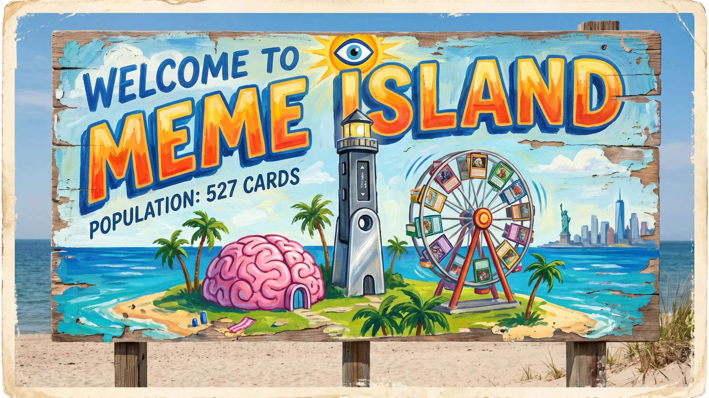

MEME ISLAND Setup
All 527 cards of The Memes by 6529 and 66 of MLow's meme sculptures, on an island that keeps New York time. The sky, the weather and the calendar are real. There are six keys, a vault and nine golden slices. A cab circles the ring road. The phone by the pier rings. Type words a New Yorker would say and see what happens; type HELP if you get stuck. Say gm.